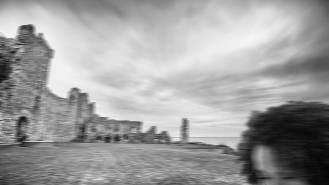

Post 1: The Beginning AKA what am i even doing here
2019/01/01
If you're reading this I guess it means that you, like me, belive in the paranormal. And no I'm not talking about aliens or bigfoot;
I mean the seriously paranormal. Spirits, ghouls, demons, the type of creatures that most people have convinced themselves
don't exist. But knowing that that thing that went bump in the night is probably a soul sucking monster, and actually searching for
it, are two different things. Luckily for you, I'm more than willing to do the heavy lifting here and sacrifice my time, to find and expose
these creatures.
Dramatic prologue aside, this blog will be where I will document the findings from my most recent investigation, the haunting of Lothian Manor. For about as long as our county has exited, rumours of Lothian Manor's haunting have spread across neighbouring towns. And every few generations, someone guileless enough will scale the manor's surrounding walls with the intention of spending the night. Nobody has stayed on Lothian Manor property for more than 5 hours since 1987, so it's about time someone beat that record. As I write this I've already made it onto the southern end of the manor grounds and I guess you'll find out if I made it past the 5 hour mark the next time I update this blog.
Dramatic prologue aside, this blog will be where I will document the findings from my most recent investigation, the haunting of Lothian Manor. For about as long as our county has exited, rumours of Lothian Manor's haunting have spread across neighbouring towns. And every few generations, someone guileless enough will scale the manor's surrounding walls with the intention of spending the night. Nobody has stayed on Lothian Manor property for more than 5 hours since 1987, so it's about time someone beat that record. As I write this I've already made it onto the southern end of the manor grounds and I guess you'll find out if I made it past the 5 hour mark the next time I update this blog.

I took many pictures with the manor ruins but they all came out blurry?!